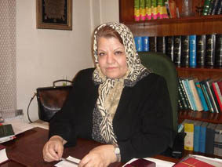

پذيرش > سایت نوشته ها > لایحهای مشوق چند همسری مرد، بدون اجازه زن / گفتگوی رادیو زمانه با فریده (...)


 لایحهای مشوق چند همسری مرد، بدون اجازه زن / گفتگوی رادیو زمانه با فریده غیرت لایحهای مشوق چند همسری مرد، بدون اجازه زن / گفتگوی رادیو زمانه با فریده غیرت
31 شهریور 1386 - - نسخه قابل چاپ
لایحهای به نام «لایحهی حمایت از خانواده» جهت بررسی و تصویب از طرف دولت به مجلس ارائه شده است که فعالان حقوق زن بر این نظرند که محتوای آن چیزی جز ترویج بیتوجهی به حقوق زن و تضییع این حقوق و گشودن راه قانونی برای چند همسری مرد بدون اجازه زن اول نیست. آنها میگویند این لایحه که ابتدا از سوی قوه قضایی ارائه شده بود توسط دولت تغییر شکل یافته است. پنج تشکل فعال حقوق زن نیز با صدور بیانیهای از مجلس شورای اسلامی خواستهاند تا به موارد نقض حقوق زن در این لایحه توجه جدی داشته باشد.
در همین زمینه گفتوگویی داشتم با فریده غیرت، وکیل دادگستری و عضو هیئت مدیرهی کانون وکلا در تهران، و از او درمورد مهمترین موارد ناقض حقوق زن در این لایحه جویا شدم:
فریده غیرت: ابتدا باید بگویم این عنوانی که به این لایحه داده شده است یعنی «لایحهی حمایت از خانواده»، به نظر من این عنوان منطبق با مفاهیم و مطالب منعکس در این لایحه نیست. علت هم این است که این لایحه را وقتی من مطالعه و بررسی کردم، دیدم این لایحهی رسیدگی به موارد اختلاف دعاوی خانوادگیست. که این را از قوانین گذشتهای که ما داشتیم، یعنی قانون حمایت خانواده، قانون ازدواج، قانون گرفتن اصل گواهی برای ازدواج و تمام آن قوانین را آمدهاند کنارگذاشته اند یا بررسی کردهاند و این قانون را بجای آن میخواهند معرفی کنند. ابتدای امر این لایحه توسط قوه قضایی یعنی در معاونت توسعهی قضایی تهیه و به هیات دولت داده شده است. هیات دولت تغییراتی را در آن داده و آن را به مجلس شورای اسلامی در ماه پنج یعنی مرداد ماه برای تصویب ارائه کرده است. و خب، این سروصداییست که اخیرا ملاحظه میکنید و مسئله رو شده است.
نکات مهمی که بیشتر مورد اعتراض هست چه نکاتیاند؟
نکات مهمی که در این لایحه هست، به دنبال مطالبی که در مقدمه گفتم، میبایست خود قوانین خانواده ابتدای امر مورد توجه و بازنگری قرار میگرفته که متاسفانه نگرفته است. در حقیقت اینجا آیین دادرسی اختلافات است که مورد بحث قرار گرفته است. من اشارهای میکنم به موارد کلی در این لایحه:
مسئلهی اول، ایجاد یک مرکز مشاورهی خانواده در کنار دادگاههای خانواده پیشبینی شده است در اینجا که خب این اصولا چیز بدی نیست. مرکز مشاوره هرچقدر باشد برای بررسی مسایل و حل و فصل دعاوی خانوادگی بسیار مفید و موثر است. اما بعد آمدهاند در خود دادگاهها گفتهاند که رییس دادگاه دو مستشار دارد که حتما یکیشان خانم خواهد بود، یعنی یکی از بانوانی که دارای رتبهی قضایی باشد. اما قید نکرده است که آیا این خانمی که دارای رتبهی قضایی هست حق انشای رای هم دارد یا نه؟ آنجا فقط گفته شده است که رای با اکثریت خواهد بود. این که خانمها برخلاف آنچه تا بهحال ما داشتهایم در قوانینمان که زن حق قضاوت ندارد، که انشای رای هم جزو آن هست، آیا در اینجا این حق را خواهند داد یا نه؟ این موضوعیست که در اینجا مسکوت است.
مسئلهی دوم که بسیار حائز اهمیت است مسئلهی کسب اجازه از همسر اول برای ازدواج دوم هست. ما در قوانینمان داریم الان، یعنی در حال حاضرهم، که اگر مردی قصد ازدواج مجدد داشته باشد، نیازمند به کسب اجازه از همسر اول هست. حالا آمدهاند در این لایحه اینجور پیشبینی کردهاند که اجازهی همسر اول را حذف کرده اند و توانایی و قدرت و استطاعت مرد را جایگزین آن کردهاند و بعد اینکه بتواند عدالت را برقراربکند. که متاسفانه این یک بحث بسیار مفصلیست که آیا اصولا مردی که میخواهد مبادرت به ازدواج دوم بکند آیا قادر هست عدالت را بین دو زن برقرار بکند و آیا عدالت صرفا غذا، لباس و این چیزها خواهد بود؟ و یا آنچه از نظر قوانین اسلام مطرح هست عدالت خیلی بالاتر از این حرفهاست. یعنی عدالت در مسایل معنوی و عاطفی هم هست؟ و قبول بفرمایید که اگر مردی قرار باشد همسر دوم را هم به اندازهی همسر اول دوست داشته باشد و عدالت را بخواهد به این شکل برقرار بکند، که خب اساسا مبادرت به چنین کاری قطعا نخواهد کرد.
یعنی معتقد هستید که این لایحه از لحاظ امکانات حقوقی بیشتر از قبل مشوق چندهمسری میتواند باشد؟
به طریقی شاید همینطور باشد. چون اجازهی همسر اول را برداشته و متاسفانه توانایی مرد را جایگزین آن کرده و این توانایی نیز به تشخیص دادگاه گذاشته شده است. که این ابدا هیچ چیز کاملی نیست. بعد مسئلهی ثبت ازدواج منقطع یا ازدواج متعه هست که مخیر گذاشته است که اگر زوجین خواستند این را ثبت بکنند یا اگر توافق کردند. اینها نکاتیست که در این لایحه به نظر من جای ایراد دارد که باید اینها همانطور که حقوقدانها و مخالفین این لایحه بحث کردهاند، انشاالله در مجلس هم مورد توجه قرار بگیرد و به این شکلی که الان مطرح است تصویب نشود.
خانم غیرت! یکسال از کمپین یک میلیون امضاء برای تغییر قوانین تبعیضآمیز میگذرد. آیا اعتراض به این گونه لوایح و این محدودیتها همچنان محدود به گروهی از زنان آگاه و فعالان حقوق زن هست، یا اینکه گروههای بزرگی از زنان آگاهانه در این مسئله مداخله میکنند؟
تا آنجا که من اطلاع دارم و برخورد دارم با مسایل اجتماعی و جامعه زنان، خود همین تشکیل کمپین یک میلیون امضاء توانسته است یک اثر مثبت و مستقیمی را در اذهان زنان داشته باشد و توجه خیلی از افراد را به این مسئله جلب کرده است که قوانین خانواده تبعیضآمیز هستند و نیاز به تغییر دارند. کمپین، این توجه و این گستردگی را داشته است و من میبینم که در خیلی ازجاها که آشنا نبودند به این مسئله، با این موضوع بعد از یکسال آشنا شدهاند و مسئله را طرح میکنند.
رادیو زمانه
ارسال به
بالاترین
،
توییتر
،
فریندفید
،
فیسبوک
در همين بخش :
 یک خبر تلخ؟ یک قانونشکنی؟ یک تصمیم بخشنامهای جدید؟ یک خبر تلخ؟ یک قانونشکنی؟ یک تصمیم بخشنامهای جدید؟
چرا بایست به سکسوالیته پرداخت؟ / نفیسه آزاد
آزارجنسی خانگی؛ «قربانی» نه، «نجات یافته»
زنان، بزرگترین بازندگان بهار عرب
سانسور از دیدگاه جنسیتی/الهه امانی
ديگر بخش ها :
طرح یک میلیون امضا
|
مقالات
|
سایت نوشته ها
|
اخبار
|
گزارش كمپين
|
گفت و گو
|
علیه سکوت
|
كوچه به كوچه
|
نامه های شما
|
گزارش ویژه
|
گفتگو با اعضا
|
ویژه سالگرد کمپین
|
تصویر برابری
|
دل آرام علی
|
تریبون
|
مقالات
|
تاریخ شفاهی
|
خارج از چارچوب
|
کتابخانه
|
درباره کمپین
|
کمپین در شهرها
|
کمپین در بند
|
صدای تغییر
|
ویژه 22 خرداد
|
لایحه حمایت از خانواده
|
گالری
|
عشا مومنی
|
امیر یعقوبعلی
|
خدیجه مقدم
|
راحله عسگری زاده و نسیم خسروی
|
پروین اردلان،جلوه جواهری، مریم حسین خواه، ناهید کشاورز
|
زینب پیغمبرزاده
|
سعیده امین، سارا ایمانیان، محبوبه حسین زاده، ناهید کشاورز و همایون نامی
|
احترام شادفر
|
نسیم سرابندی زاده،فاطمه دهدشتی
|
وبلاگ مهمان
|
پرونده خرم آباد
|
دستگیری ها
|
مریم مالک
|
پرستو اللهیاری
|
مهرنوش اعتمادی
|
سمیه رشیدی
|
Other Languages
|
همراهان
|
«فراخوان کمپین ده روز با بهاره هدایت»
| English
|